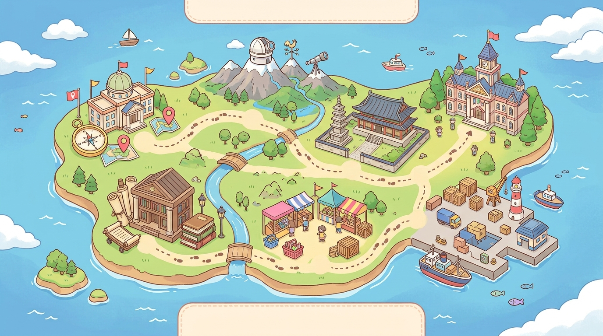

🌍 사회 탐험대 🌍
6개의 지역을 구하라

🚩 탐험 시작
▶ 이어하기
📖 게임 방법
🔊 소리:
켜짐
🗑 기록 초기화
🏠 처음으로
나만의 탐험대원을 만들어주세요!
🐰
나침반 토끼
🐻
기록 수첩 곰
🐱
돋보기 고양이
🦊
보물 지도 여우
출발! 🚀
🏠 홈
🐰
탐험대원
💯
0
점
⭐
0
🏅 배지:
0
/6
🧩 조각:
0
/6
🗺 사회 탐험 지도
🏠 중단하기
1지역
탐험 중...
진행:
1/9
1단계: 빠른 퀴즈
여기에 문제가 표시됩니다.
제출하기
✖ 닫기
📝 틀린 문제 복습소
남은 복습:
0
문제
🎉 탐험 완료! 🎉
사회 탐험 대장
내 이름
탐험대원
총점
0
획득한 별
⭐
0
전체 정답률
0%
최고의 지역
-
복습 권장 지역
-
📜 수료증 보기
📝 틀린 문제 풀기
🏠 홈으로
🔙 뒤로
🖨 인쇄하기
사회 탐험대 수료증
탐험대원
위 탐험대원은 4학년 1학기 사회 내용을
우수한 성적으로 탐험하고 모든 미션을 해결하였기에
사회 탐험 대장
칭호와 함께 이 수료증을 수여합니다.
총점:
0
점
정답률:
0
%
획득 배지:
0
개
2026년 사회 탐험 본부
알림
내용이 들어갑니다.
확인